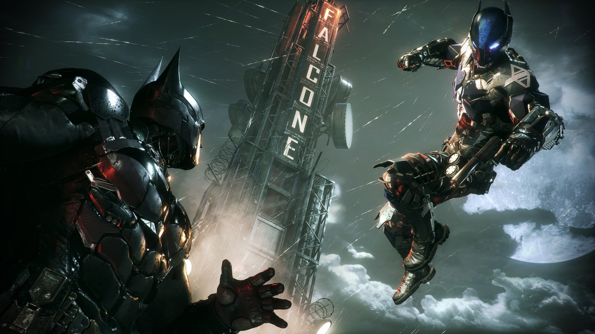

Batman: Arkham Knight é o terceiro jogo da franquia Arkham desenvolvida pela Rocksteady onde o jogador novamente assume o papel do Batman para proteger Gotham por uma última vez. A história gira em torno do Espantalho, que ameaça a cidade com uma fórmula aperfeiçoada da toxina do medo, e um novo inimigo original também é apresentado, intitulado de Cavaleiro de Arkham, ou Arkham Knight.
No jogo, encontramos vários personagens famosos como Batman, Coringa, Mulher-Gato e Robin. Cada personagem tem um papel na história, seja interferindo diretamente na trama principal, ou em missões secundárias. Além disso, alguns dos personagens citados, como o Robin, são jogáveis em momentos específicos da gameplay.
Eu gosto muito de Batman Arkham Knight pois o jogo tem gráficos incríveis, uma história muito boa e uma jogabilidade muito divertida, onde cada missão, mesmo as secundárias, são únicas e envolventes, sendo fácil passar horas jogando sem cansar. Além disso, dirigir o Batmóvel e explorar Gotham é muito legal.
O jogador pode lutar contra inimigos usando golpes, gadgets e estratégias furtivas. Também é possível explorar a cidade livremente e completar missões secundárias que desbloqueiam o final verdadeiro do jogo.
Esse é o último jogo da série Arkham desenvolvido pela Rocksteady e é considerado por muitos o melhor jogo do Batman.
